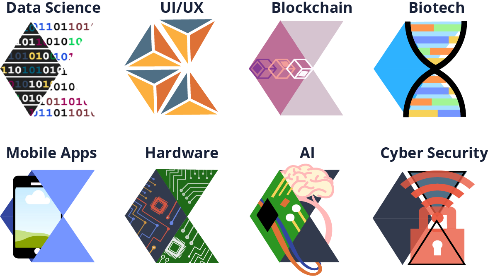
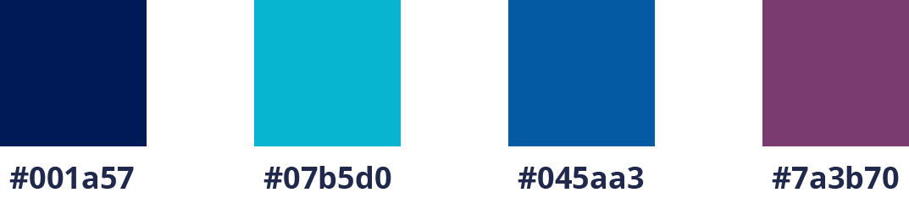

Back in September I rushed Catalyst, Duke’s first pre-professional and social tech organization. At one of our first events in the semester, I talked to Carolyn, one of the marketing chairs, about my growing interest in design and later on she asked if I wanted to help create a design for our apparel.
Inspiration
As a freshman and new member, I didn’t want to make some lame design that the other members wouldn’t want to wear so I spent a lot of time thinking about possible options. One of the biggest inspirations for the design actually came from a Medium article about Atlassian’s newly redesigned branding. You can read about it here and also check out these super awesome shirts!
I loved the variations and quirky takes on the main logo and this explanation about the new look really jumped out at me:
“We believe the new Atlassian logo balances approachability with professionalism. It’s sturdy and strong while also allowing for flexible expression.”
Even as someone who barely had any experience in CS, I was drawn to Catalyst because after talking with a few members during rush events, I discovered there were just so many different fields in tech I’d never heard of. Yeah, everyone is basically a CS major, but there’s plenty of people also double majoring with Visual Arts, Psychology, Philosophy, Biomedical Engineering, Linguistics, and the list goes on. I wanted to create a design that showed everyone the diversity in Catalyst.
The Design
I decided on a 3 x 3 set of logo variations with the original logo in the center. The next step was to choose which aspects of tech I wanted to use in the design so I started listing out the ones I knew other Catalyst members were interested in. In the end, the design would only have AI, biotech, cyber security, mobile development, blockchain, hardware, UI/UX, and data science (popular fields like fintech and machine learning weren’t included because I really just couldn’t think of designs for them).
How do you use Illustrator??
I actually started out creating the design on Canva, the holy grail tool I used throughout high school to create ads and graphics for club activities. It’s a very user friendly tool that comes with a bunch of shapes as well as free icons you can use, but the biggest drawback is that you can’t cut the shapes or even create your own. So how did I work around this? Hopefully by learning a more sophisticated design tool like Illustrator or Photoshop? Nope, by layering shapes of the same background color on top of parts of the design i wanted to “cut out”. This actually worked out pretty well and below you can see my first finished design. Unfortunately when I sent it to Carolyn and she opened it up in Illustrator, I got totally exposed.
Final Touches
I later had a quick meeting with Carolyn about finalizing the design for our apparel because if you hadn’t guessed already, my design had a heck ton of colors which would make sweatshirts hella expensive. We wanted to choose a color palette with a maximum of 5 colors that would (1) bring down the price of apparel and (2) help streamline the design to look more coherent. I learned it was best to keep the palette mostly in the same color family with the addition of an accent color and also a neutral color. With this new palette, I recolored the original design and sent it to Carolyn, who cleaned it up a bit.
Final color palette: dark navy as apparel background, Catalyst blue (of course), another classic blue shade, magenta as the accent, and white as the neutral
This was the first design work I had done since coming to college, and I gotta
say it’s pretty cool walking around campus and seeing it on someone’s back! I’m just glad people actually
wear it and didn’t shove it to the back of their closets.
Also, I would like to just say that I now know how to use Illustrator and am no longer hiding my
designs with background color shapes.